MeterSphere 使用手册¶
目录
平台相关信息¶
项目网址¶
https://github.com/metersphere/metersphere
安装部署¶
Docker 部署¶
运行命令行 docker run -d -p 8081:8081 --name=metersphere -v ~/.metersphere/data:/opt/metersphere/data cr2.fit2cloud.com/metersphere/metersphere-ce-allinone
即可直接在 docker 拉取镜像并运行容器。
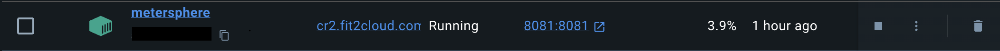
浏览器直接访问 http://localhost:8081 即可进入平台界面，用户名为 admin，密码为 metersphere 。
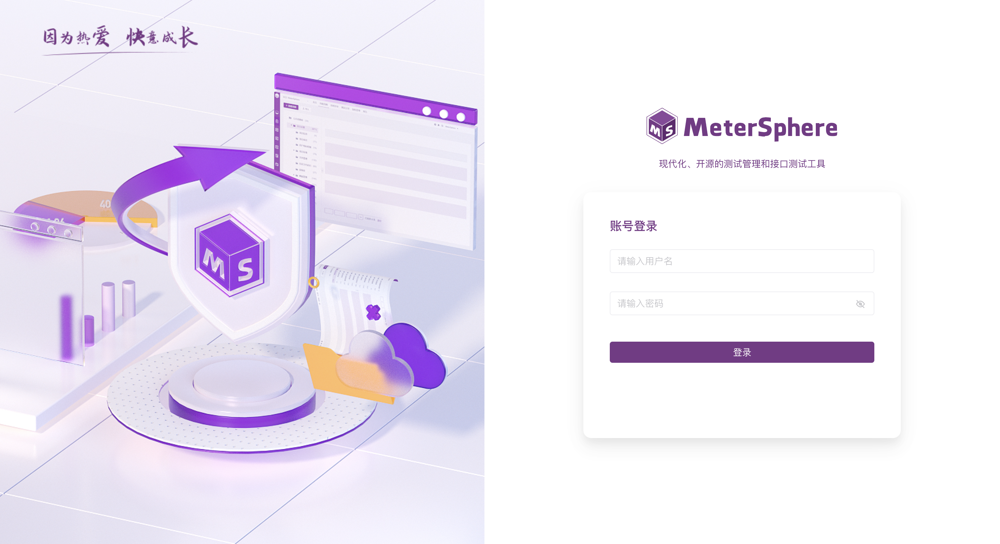
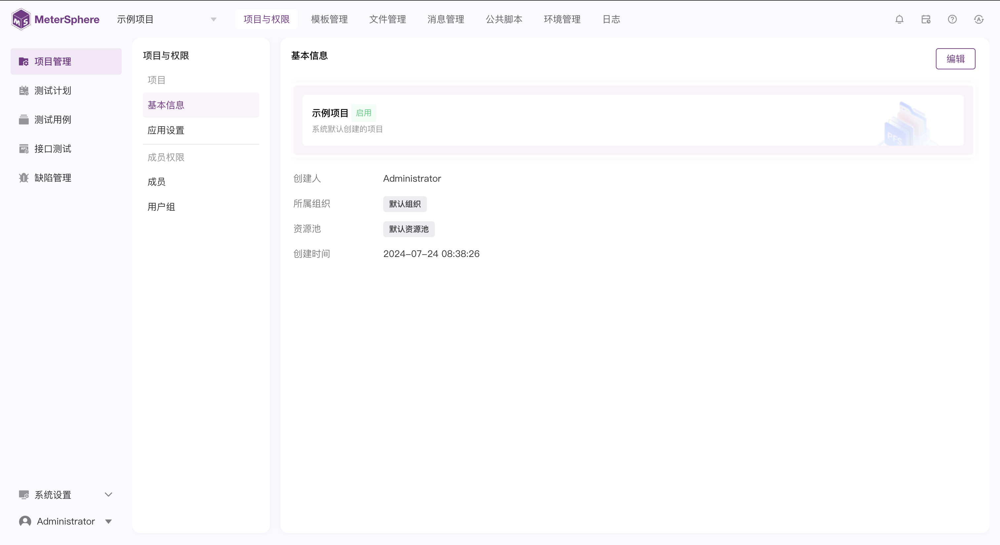
离线安装包安装部署（内网环境）¶
https://community.fit2cloud.com/#/products/metersphere/downloads
社区版限制1个组织，1个资源池，30个用户
1Panel 商店部署¶
平台功能——接口测试¶
建立项目¶
页面左上角点击即可新建项目。
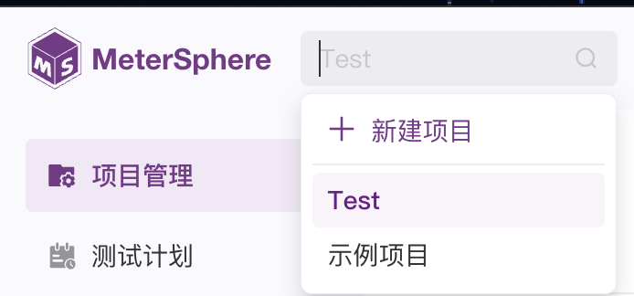
设置测试用例¶
用户管理¶
获取手机验证码（请求体与断言的编写、环境变量的设置、环境变量在 json 请求体的应用）¶
设置三种测试用例，分别对应获取成功、因手机号不存在（不够 11 位）而获取失败、因手机号为空而获取失败三种情况。
在首页“环境管理”部分，设置两个环境变量 Phone_Success，Phone_Error，分别对应获取成功与手机号不存在的两种情况所需要的手机号变量：
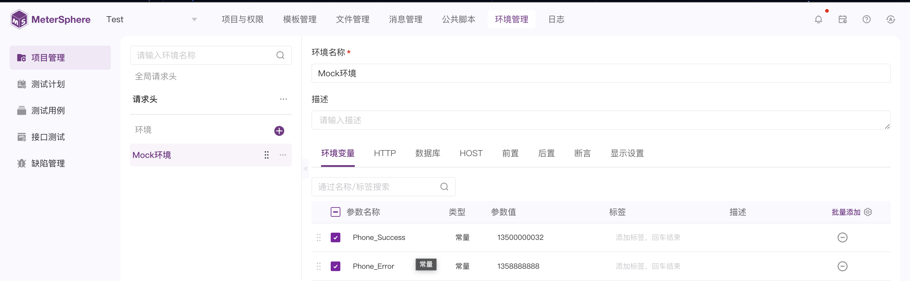
进入接口测试界面，点击“场景”，新建场景，新添加三个步骤分别测试三种情况：
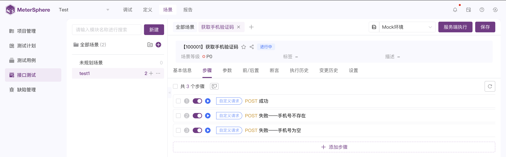
以成功的情况为例，选定请求体格式为 json，编写如下：
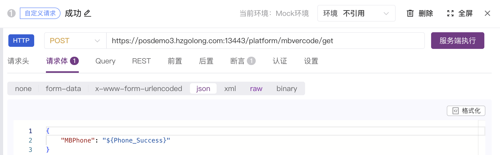
断言，即为预先设置预期结果，让平台帮我们判定响应体是否符合我们预期，编写如下：
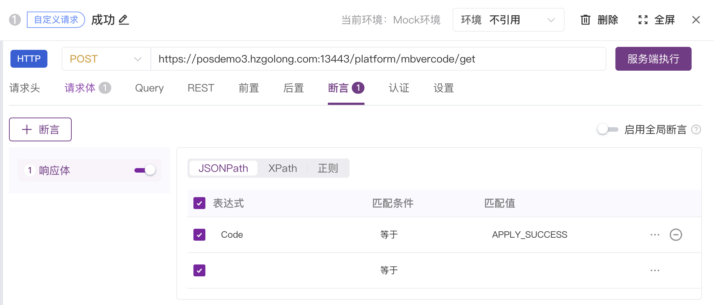
其中 ${Phone_Success} 即意为从环境变量中拉取名为 Phone_Success 的变量值，服务端执行就会在请求体中将其替换为先前我们设置的 13500000032：
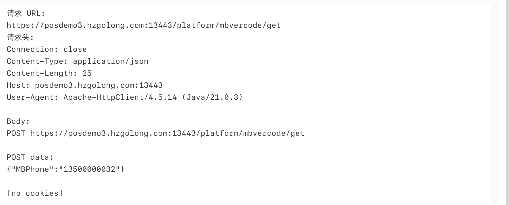
其他情况同理，执行所有我们便完成了一个简单的自动化测试：
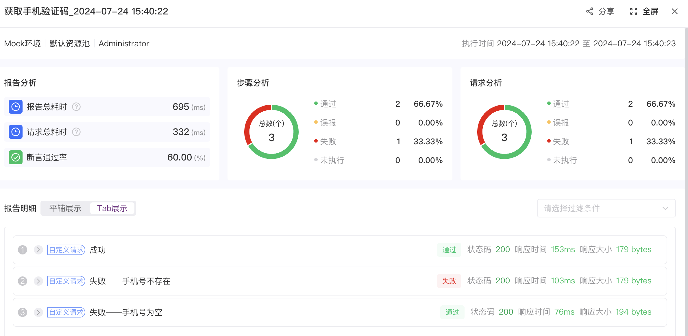
这里接口没有考虑手机号不存在的情况，默认手机号只要不为空皆可发送验证码了。
用户注册（python 环境配置、公共脚本的编写与用例引用、用例批量复制）¶
在这里（包括后面很多用例）要求先进行一次获取验证码的请求再填入验证码，所以我们可以编写一个脚本在每一次执行步骤之前都获取好验证码并将其填入我们的请求体当中。
因为脚本需要用到 requests 库，而 metersphere 本身基于 Java，python 的脚本没支持 requests 库，所以我们需要通过 virtualenv 手动安装：https://bbs.fit2cloud.com/t/topic/292
安装完成，因为非常多的用例都需要这个获取验证码的脚本，所以我们编写公共脚本供所有用例引用：
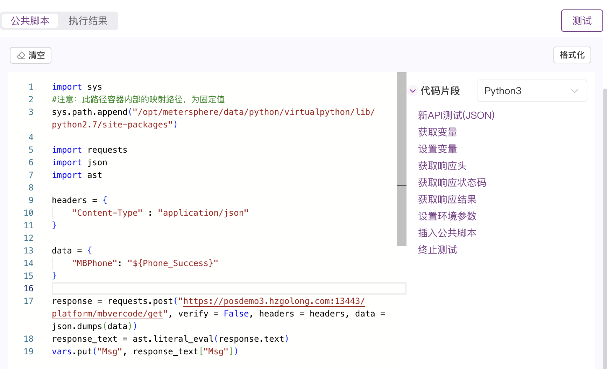
（这里我在配置 requests 库多了一个自定义 virtualpython 的路径，所以路径与网址所说的有所不同）
同时，这个脚本最后一行将返回来的 Msg（也就是验证码）设置成了一个名为 Msg 的变量，这样我们在用例当中就可以引用这个变量使用了。
在定义请求时，我们设置前置（即每次请求平台帮我们做的操作）为公共脚本：
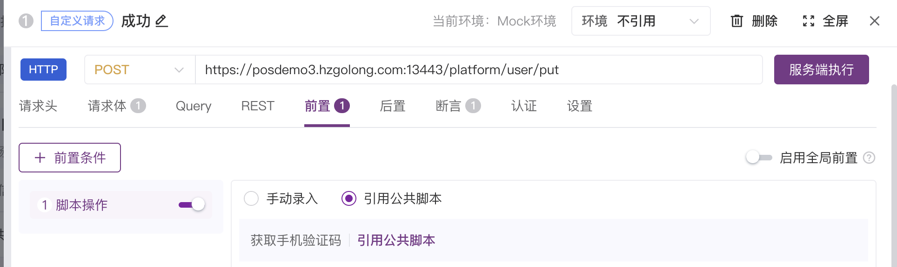
然后我们再编写请求体和断言（自行设置环境变量 Password_Right 等）：
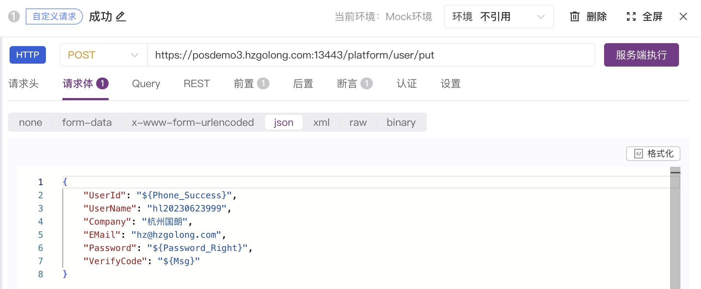
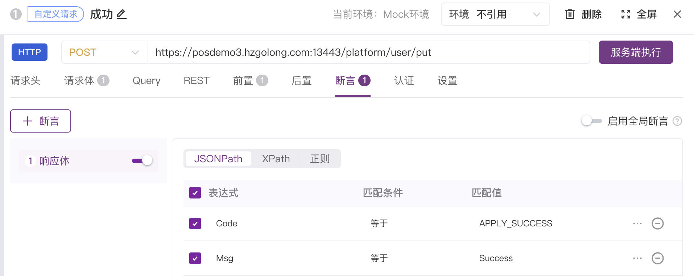
这样整个请求的顺序就是前置(公共脚本运行->获得验证码->存入 Msg 变量中）->发送请求体->断言判断。
其他测试情况同理，因为测试情况基本大同小异（无非改一改请求体和断言），这里我们可以通过复制请求实现批量设置用例的操作。
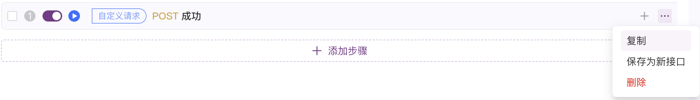
最后执行结果：
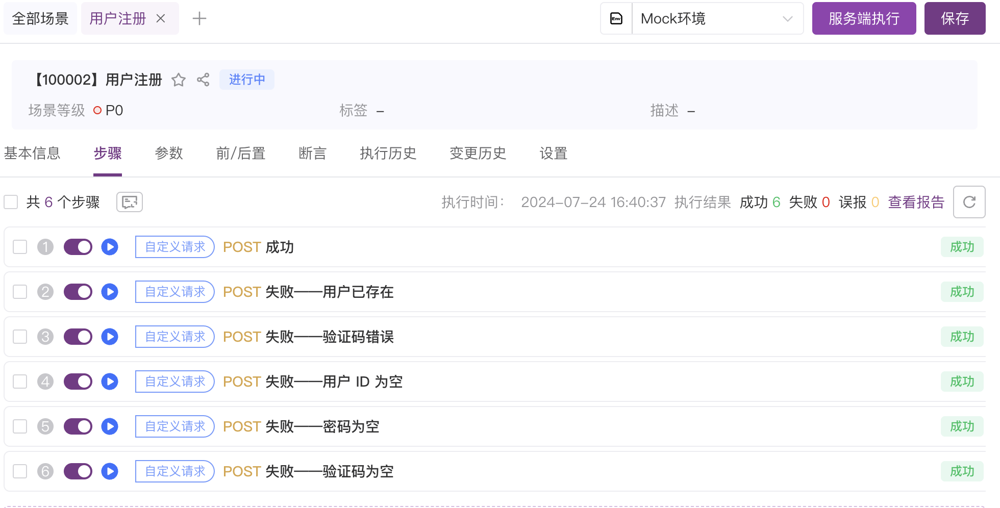
用户账号密码登录（脚本设置环境变量）¶
这个请求最重要的一点是如何拿出响应包中的 UserToken 给后续用例使用，这就涉及如何使用脚本获取 UserToken 并且赋值给环境变量，先在环境变量中设置一个空的 UserToken，然后在登录成功之后编写后置脚本（即完成传送+响应过后）：
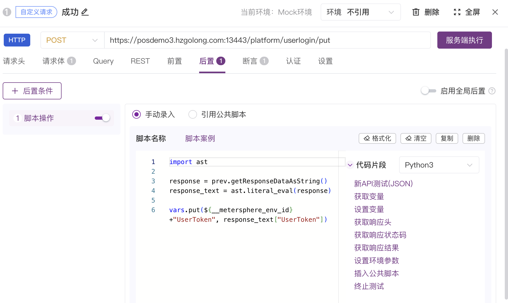
执行一次过后查看环境变量，发现已经成功赋值了：
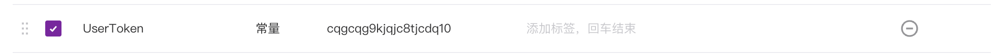
编辑执行剩下的测试样例，最后结果如下：
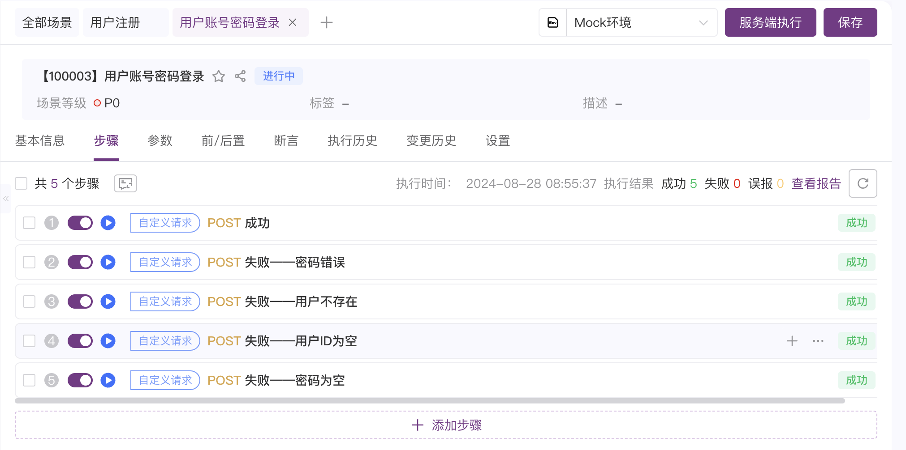
用户手机验证码登录（综合之前的）¶
这个测试情况同时用到之前所写的公共脚本应用、后置脚本设置环境变量等，最后结果如下：
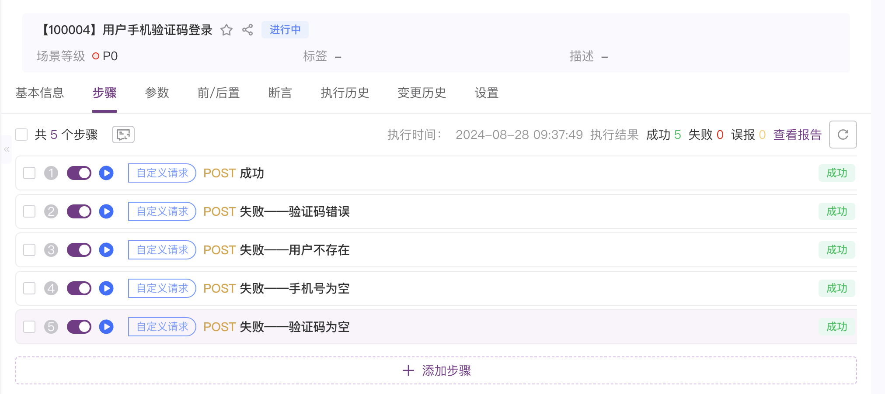
用户信息修改（签名的处理）¶
这个测试情况最重要的是如何处理签名 Sign，其实用前置脚本把 UserId，RequestTime 和 UserToken 一个个拿到，最后执行 md5 加密即可。
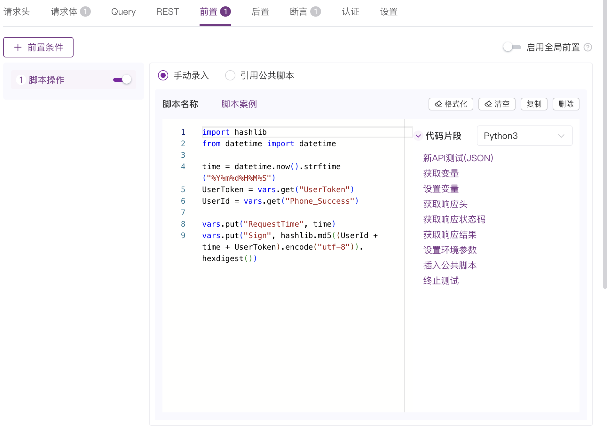
最后结果如下：
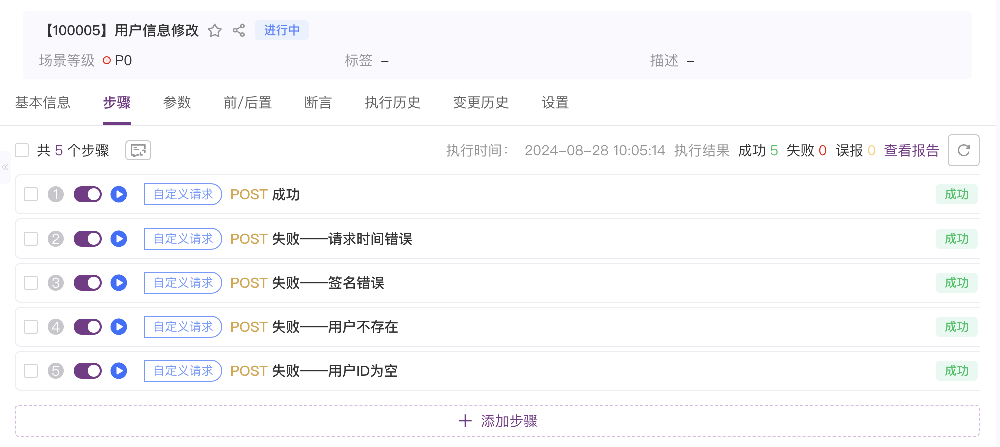
修改密码¶
结果如下：
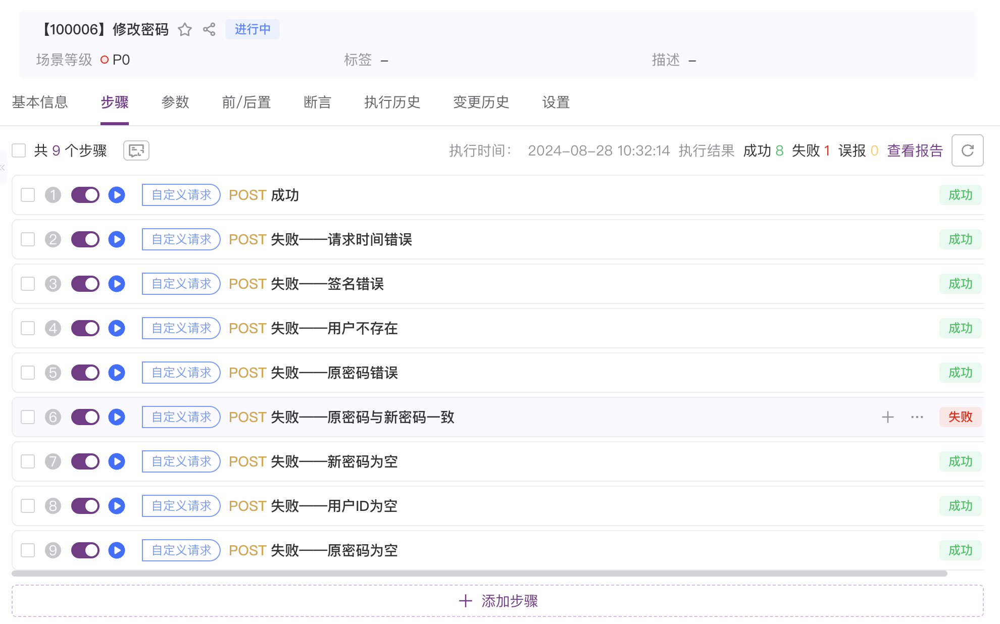
这里接口没有考虑原密码与新密码一致的情况。
找回密码¶
结果如下：
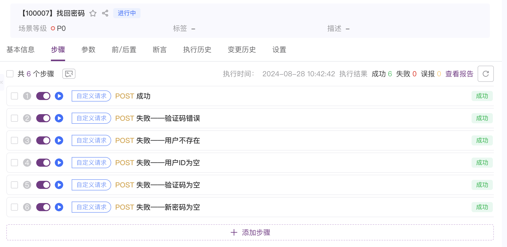